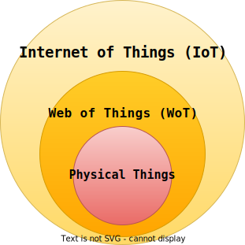
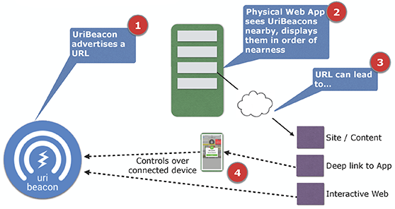
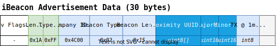

Overview
"A Physical Thing is an abstraction of a physical entity that provides interactions to and participates in the Web of Things"
- W3C Web of Things (WoT) Thing Description 1.1 
Problem Statement
"How to discover and track Physical Things indoors?"
"How to provide context to Physical Things?"
"How to get this context to the user?"
Related Work
 - HP CoolTown Beacon (2000) [26]
- HP CoolTown Beacon (2000) [26] - Location-based service using ontology-based semantic queries (2017) [18]
Related Work Physical Web
 - Manfred Sneps-Sneppe, Dmitry Namiot, "On Physical Web models" (2016)
Bluetooth Low Energy (BLE)
Bluetooth Low Energy (BLE) Positioning
BLE Specifications UriBeacon
- Encoded URI to fit within 17 bytes
- One flag implemented for invisible hint
- Discontinued in favor of Eddystone-URL
BLE Specifications Eddystone

BLE Specifications iBeacon & AltBeacon
 
BLE Specifications Bluetooth IPS

| Bit (MSB) | Description |
|---|---|
| 0 | Presence of coordinates in advertising packet |
| 1 | Coordinate system used (WGS84 or local) |
| 2 | Presence of TX Power field in advertising packet |
| 3 | Presence of Altitude field in advertising packet |
| 4 | Presence of Floor Number in advertising packet |
| 5 | Presence of Uncertainty in advertising packet |
| 6 | Location Name avaiable in GATT database |
SemBeacon

SemBeacon Bluetooth Specification
BLE 4.X

SemBeacon Bluetooth Specification
Flags
Based on UriBeacon, Bluetooth IPS and Eddystone frames
| Bit (MSB) | Description | Example |
|---|---|---|
| 0 | Indicates if the beacon has a position. | 0 = Unsure, 1 = Yes |
| 1 | Indicates if the beacon is private. | 0 = Public, 1 = Private |
| 2 | Indicates if the beacon is attached to a moving object. | 0 = No, 1 = Yes |
| 3 | Indicates if the beacon has a positioning system. | 0 = No, 1 = Yes |
| 4 | Indicates if the beacon has telemetry data. | 0 = No, 1 = Yes |
| 5 - 7 | Reserved for future use. |
SemBeacon Bluetooth Specification
BLE 5.X (Work in Progress)

SemBeacon Namespace and Instance

SemBeacon POSO Extension
SemBeacon Device Interactions
M. Bermudez-Edo, T. Elsaleh et al. "IoT-Lite Ontology", November 2015
SemBeacon Method of Discovery

:pl9_3 a ssn:Deployment ;
rdfs:label "PL9.3"@en ;
sembeacon:namespaceId "77f340dbac0d..."^^xsd:hexBinary .
:BEACON_08 a sembeacon:SemBeacon ;
sembeacon:namespace :pl9_3 ;
sembeacon:instanceId "c187d748"^^xsd:hexBinary ;
poso:hasPosition [ a ogc:Geometry ;
ogc:asWKT "POINT Z(...)"^^ogc:wktLiteral ] .
:BEACON_07 a sembeacon:SemBeacon ;
sembeacon:namespace :pl9_3 ;
sembeacon:instanceId "00cc38e7"^^xsd:hexBinary ;
poso:hasPosition [ a ogc:Geometry ;
ogc:asWKT "POINT Z(...)"^^ogc:wktLiteral ] .
:BEACON_02 a posoc:iBeacon ;
sembeacon:namespace :pl9_3 ;
posoc:proximityUUID "77f340dbac0d..."^^xsd:hexBinary ;
posoc:major 50174 ; posoc:minor 64267 ;
poso:hasPosition [ a ogc:Geometry ;
ogc:asWKT "POINT Z(...)"^^ogc:wktLiteral ] .
Demonstrator Dataset & Recreation
- M. Van de Wynckel & B. Signer, OpenHPS Single Floor Dataset (2021)

Demonstrator Transformation
https://sembeacon.org/examples/openhps2021/beacons.ttl
:BEACON_08 a sosa:FeatureOfInterest, ogc:SpatialObject, poso:RFLandmark,
poso:BluetoothBeacon, sembeacon:SemBeacon;
rdfs:label "BEACON_08";
poso:hasPosition [ a geo:Point, poso:AbsolutePosition;
ogc:asWKT "POINT Z(4.392253994600526 50.82057562786381 93.5999999962747)"^^ogc:wktLiteral;
ogc:coordinateDimension 3; ogc:spatialDimension 3; ogc:dimension 3;
schema:latitude "50.82057562786"^^xsd:double; schema:longitude "4.392253994600"^^xsd:double;
schema:elevation "93.5999999962"^^xsd:double ];
posoc:hasReferenceRSSI [
poso:hasRSS [ a qudt:QuantityValue;
qudt:unit unit:DeciB_M;
qudt:numericValue -56 ];
poso:hasRelativeDistance [ a qudt:QuantityValue;
qudt:unit unit:M;
qudt:numericValue 1 ]];
hardware:macAddress "f7:5c:38:a4:45:ec";
ogc:sfWithin :pl9_3_corridor;
sembeacon:namespace :pl9_3;
sembeacon:shortResourceURI "https://bit.ly/3JsEnF9"^^xsd:anyURI;
sembeacon:instanceId "c187d748"^^xsd:hexBinary.
Demonstrator Transformation
https://sembeacon.org/examples/openhps2021/beacons.ttl
:pl9_3 a ssn:Deployment, sosa:FeatureOfInterest, ogc:SpatialObject, schema:Accommodation, seas:Floor;
ogc:hasGeometry [ a ogc:Geometry;
ogc:asWKT "POLYGON Z((4.3926809491 50.82056 92, 4.3925189891 50.820491195 92,
4.3924384904 50.820566477 92, 4.3923227711 50.820517092 92, 4.3924032699 50.820441810 92,
4.3922413107 50.820372691 92, 4.3918880594 50.820703046 92, 4.3920500197 50.820772165 92,
...
4.3921796702 50.820650918 95, 4.3922953899 50.820700303 95, 4.3921657397 50.820821550 95,
4.3923277009 50.820890669 95, 4.3926809491 50.820560314 92))"^^ogc:wktLiteral;
ogc:coordinateDimension 3; ogc:spatialDimension 3; ogc:dimension 3 ];
rdfs:label "PL9.3";
sembeacon:namespaceId "77f340dbac0d20e8aa3af656a29f236c"^^xsd:hexBinary .
:pl9_3_lobby_1 a schema:Place, ssn:Deployment, sosa:FeatureOfInterest, ogc:SpatialObject;
ogc:hasGeometry [ a ogc:Geometry;
ogc:asWKT "POLYGON Z((4.392281317197596 50.82061024217639 92,
4.39223788808538 50.82065085654958 92, 4.392153959019106 50.82061503844629 92,
4.392197388204323 50.8205744240731 92, 4.392281317197596 50.820610242176386 94,
4.392237888085379 50.82065085654958 95, 4.392153959019106 50.82061503844629 95,
4.392197388204322 50.8205744240731 94,
4.392281317197596 50.82061024217639 92))"^^ogc:wktLiteral;
ogc:coordinateDimension 3; ogc:spatialDimension 3; ogc:dimension 3 ];
rdfs:label "Lobby #1" .
Demonstrator Mobile Application
- Scans and Simulates SemBeacon, iBeacon, AltBeacon and Eddystone
- Extracts and visualises SemBeacon encoded information
- Implements HTTP caching and namespace mapping to environments
Supplemental Material
- Android Application to scan and broadcast SemBeacons
Created using Ionic Capacitor and @sembeacon/openhps - Arduino ESP32 Library to advertise SemBeacon
Available in the Arduino IDE as "ESP32_SemBeacon" - Android library extension to identify SemBeacons
Using the AltBeacon Beacon Library - TypeScript library to create and detect SemBeacons
Using the OpenHPS framework (@sembeacon/openhps)
Conclusion and Future Work
- Semantic beacon solution called SemBeacon
- Backwards compatible, offline identification, scalable
- Expanding to non-BLE beacons (e.g. Ultrawide-band)
- Expanding the vocabulary to facilitate device interactions
- Expanding to Solid Pods to enable the advertising of digital twins
![](data:image/svg+xml,%3Csvg%20xmlns%3D%22http%3A%2F%2Fwww.w3.org%2F2000%2Fsvg%22%20viewBox%3D%220%200%2045%2045%22%20shape-rendering%3D%22crispEdges%22%3E%3Cpath%20fill%3D%22%23ffffff%22%20d%3D%22M0%200h45v45H0z%22%2F%3E%3Cpath%20stroke%3D%22%23000000%22%20d%3D%22M4%204.5h7m3%200h3m1%200h5m2%200h1m1%200h4m3%200h7M4%205.5h1m5%200h1m3%200h2m1%200h2m1%200h2m1%200h1m1%200h1m2%200h1m5%200h1m5%200h1M4%206.5h1m1%200h3m1%200h1m1%200h3m2%200h1m2%200h1m1%200h1m1%200h1m1%200h1m1%200h1m1%200h1m3%200h1m1%200h3m1%200h1M4%207.5h1m1%200h3m1%200h1m1%200h1m1%200h3m4%200h2m1%200h1m1%200h2m2%200h3m1%200h1m1%200h3m1%200h1M4%208.5h1m1%200h3m1%200h1m2%200h1m1%200h2m2%200h1m1%200h1m1%200h1m10%200h1m1%200h3m1%200h1M4%209.5h1m5%200h1m2%200h1m1%200h1m1%200h1m1%200h9m6%200h1m5%200h1M4%2010.5h7m1%200h1m1%200h1m1%200h1m1%200h1m1%200h1m1%200h1m1%200h1m1%200h1m1%200h1m1%200h1m1%200h1m1%200h7M14%2011.5h5m2%200h1m3%200h1m1%200h3m1%200h2M7%2012.5h2m1%200h2m1%200h1m1%200h1m1%200h1m1%200h1m1%200h2m1%200h2m1%200h1m1%200h1m2%200h1m4%200h2M4%2013.5h3m1%200h1m2%200h1m2%200h1m1%200h3m2%200h2m2%200h1m1%200h3m4%200h1m1%200h4M6%2014.5h1m1%200h1m1%200h2m3%200h1m2%200h1m2%200h2m1%200h1m1%200h2m1%200h1m3%200h2m1%200h1m1%200h1m1%200h1M4%2015.5h2m2%200h2m3%200h4m2%200h1m3%200h5m2%200h2m1%200h3m1%200h2M4%2016.5h3m1%200h4m2%200h1m2%200h3m1%200h2m3%200h2m4%200h1m1%200h1M4%2017.5h4m3%200h1m1%200h2m1%200h2m1%200h2m1%200h2m1%200h4m2%200h3m2%200h1m1%200h1M6%2018.5h1m3%200h1m2%200h1m2%200h1m1%200h2m1%200h2m3%200h2m2%200h3m1%200h1m1%200h5M4%2019.5h1m2%200h1m1%200h1m2%200h2m1%200h1m1%200h1m1%200h1m3%200h1m1%200h1m2%200h1m3%200h2m2%200h5M10%2020.5h2m3%200h2m2%200h2m1%200h2m2%200h2m1%200h1m1%200h1m2%200h1m3%200h1M4%2021.5h2m1%200h1m3%200h1m2%200h2m1%200h4m2%200h1m1%200h3m2%200h4m1%200h1m2%200h2M4%2022.5h1m1%200h1m3%200h1m6%200h1m1%200h3m4%200h1m1%200h5m1%200h1m1%200h2m2%200h1M4%2023.5h2m1%200h3m1%200h1m2%200h2m1%200h1m2%200h1m1%200h1m1%200h1m1%200h1m1%200h2m1%200h2m1%200h4m1%200h1M4%2024.5h3m1%200h1m1%200h1m1%200h3m2%200h1m2%200h1m1%200h1m1%200h1m1%200h2m1%200h1m2%200h3m1%200h2M4%2025.5h2m1%200h1m1%200h1m2%200h1m1%200h2m1%200h1m2%200h1m5%200h1m1%200h6m1%200h2m1%200h3M4%2026.5h2m2%200h3m2%200h2m2%200h4m1%200h1m2%200h1m1%200h3m1%200h1m4%200h2m1%200h2M4%2027.5h1m2%200h3m1%200h1m2%200h1m1%200h2m1%200h1m1%200h1m1%200h2m2%200h3m1%200h3m1%200h1m1%200h4M4%2028.5h1m3%200h1m1%200h1m5%200h2m2%200h6m2%200h2m5%200h1m1%200h1m1%200h1M4%2029.5h1m7%200h1m2%200h1m3%200h2m1%200h1m2%200h2m2%200h2m3%200h1m1%200h1m1%200h1M4%2030.5h2m1%200h6m1%200h5m1%200h2m1%200h6m2%200h1m2%200h1m2%200h2m1%200h1M4%2031.5h1m1%200h3m4%200h1m1%200h2m2%200h1m1%200h1m1%200h2m1%200h2m4%200h2m2%200h2m1%200h1M4%2032.5h1m5%200h3m3%200h2m1%200h2m1%200h1m5%200h2m1%200h6m1%200h1m1%200h1M12%2033.5h1m4%200h1m1%200h1m6%200h2m4%200h1m3%200h4M4%2034.5h7m1%200h3m1%200h2m2%200h5m3%200h1m1%200h1m1%200h1m1%200h1m1%200h3m1%200h1M4%2035.5h1m5%200h1m2%200h4m1%200h7m1%200h5m1%200h1m3%200h2m1%200h2M4%2036.5h1m1%200h3m1%200h1m1%200h2m4%200h1m1%200h1m3%200h2m4%200h7m2%200h2M4%2037.5h1m1%200h3m1%200h1m1%200h1m1%200h2m2%200h2m1%200h2m3%200h1m1%200h1m1%200h2m2%200h2m1%200h4M4%2038.5h1m1%200h3m1%200h1m2%200h2m3%200h1m1%200h2m2%200h1m1%200h2m2%200h2m3%200h2m2%200h2M4%2039.5h1m5%200h1m2%200h1m3%200h1m1%200h1m1%200h1m2%200h5m6%200h6M4%2040.5h7m2%200h1m1%200h2m1%200h3m1%200h2m1%200h5m2%200h1m4%200h1m2%200h1%22%2F%3E%3C%2Fsvg%3E%0A)
- https://github.com/SemBeacon/
- https://sembeacon.org/
- Android App on Google Play Store
- Slides can be found on the website